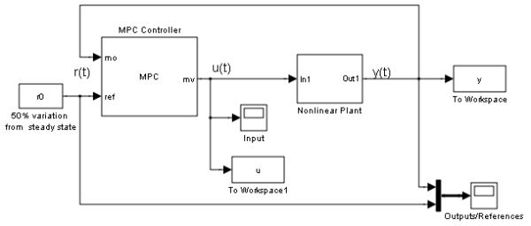
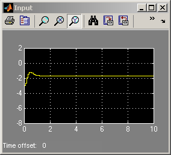
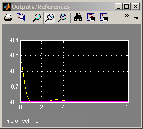
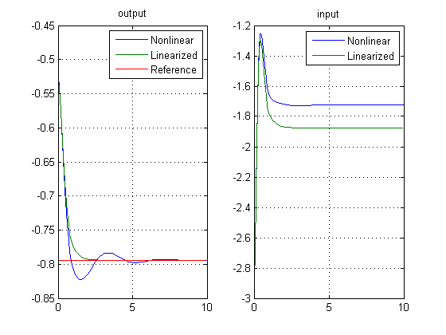

MPC for a Nonlinear Plant Under Nonzero Nominal Conditions
Contents
This demonstration shows how to work with offsets in plant models obtained by linearization of nonlinear Simulink® models. We consider the MPC control of a MIMO nonlinear system with nonzero offsets at linearization, 3 manipulated variables, 2 measured outputs.
Open-Loop Model: Linearize Nonlinear System
if ~mpcchecktoolboxinstalled('simulink') disp('Simulink(R) is required to run this demo.') return end if ~mpcchecktoolboxinstalled('scd') disp('Simulink Control Design(R) is required to run this demo.') return end
The model is described in the Simulink® diagram NL_OFFSETS.MDL. We linearize the model at the initial condition. Functions from Simulink Control Design such as "operspec", "findop", "linio" and "linearize", are used to generate the linear state space model.
Create operating point specification.
op = operspec('nl_offsets'); % Compute initial condition. [op_point op_report] = findop('nl_offsets',op); % Obtain nominal values of x, y and u. x0 = [op_report.States(1).x;op_report.States(2).x]; y0 = op_report.Outputs.y; u0 = op_report.Inputs.u; % Obtain linear model at the initial condition. sys = linearize('nl_offsets', op_point);
Operating Point Search Report:
---------------------------------
Operating Report for the Model nl_offsets.
(Time-Varying Components Evaluated at time t=0)
Operating point specifications were successfully met.
States:
----------
(1.) nl_offsets/Integrator
x: 0.575 dx: -1.82e-014 (0)
(2.) nl_offsets/Integrator2
x: 2.15 dx: -8.38e-012 (0)
Inputs:
----------
(1.) nl_offsets/In1
u: -1.25 [-Inf Inf]
Outputs:
----------
(1.) nl_offsets/Out1
y: -0.529 [-Inf Inf]
MPC Controller Setup
Ts=0.1; % Sampling time clear Model Model.Plant=sys; % Plant prediction model Model.Nominal.X=x0; % State vector at linearization Model.Nominal.U=u0; % Input vector at linearization Model.Nominal.Y=y0; % Output vector at linearization Model.Noise=0.1; % Output measurement noise model (white noise, zero mean, variance=0.01) p=20; m=3; weights=[]; % use default weights mpc_controller=mpc(Model,Ts,p,m,weights,struct('Max',0.2));
-->The "Weights.ManipulatedVariables" property of "mpc" object is empty. Assuming default 0.00000. -->The "Weights.ManipulatedVariablesRate" property of "mpc" object is empty. Assuming default 0.10000. -->The "Weights.OutputVariables" property of "mpc" object is empty. Assuming default 1.00000.
Reference signal for output vector
r0=1.5*y0;
Simulation Using Simulink® (Nonlinear Model + MPC Controller)
Tstop=10; open_system('mpc_offsets') % Open Simulink(R) Model sim('mpc_offsets',Tstop); % Start Simulation
-->Converting model to discrete time. -->Integrated white noise added on measured output channel #1. -->MPC problem is constrained and "ManipulatedVariables.RateMin" is not completely specified or has infinite values. Setting values to -10 to prevent numerical problems in QP.  
Simulation Using SIM Command (Linear model + MPC Controller)
Tf=round(Tstop/Ts); r=r0*ones(Tf,1); [y1,t1,u1,x1,xmpc1]=sim(mpc_controller,Tf,r);
-->Converting model to discrete time. -->Integrated white noise added on measured output channel #1.
Plot and compare results.
subplot(121) plot(y.time,y.signals.values,t1,y1,t1,r) legend('Nonlinear','Linearized','Reference') title('output') grid subplot(122) plot(u.time,u.signals.values,t1,u1) legend('Nonlinear','Linearized') title('input') grid
bdclose('mpc_offsets')